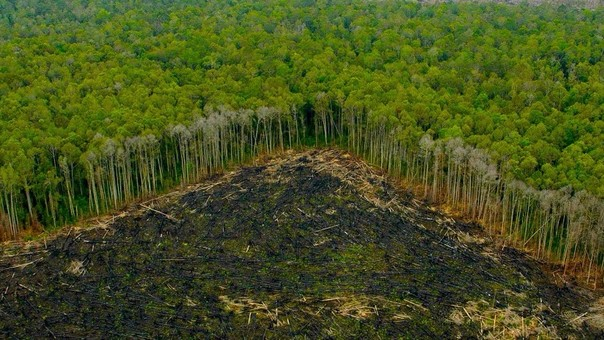
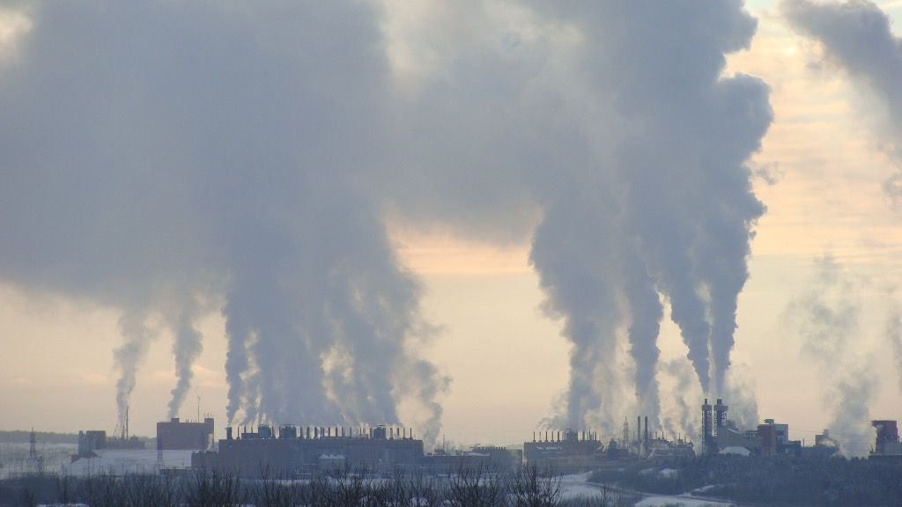
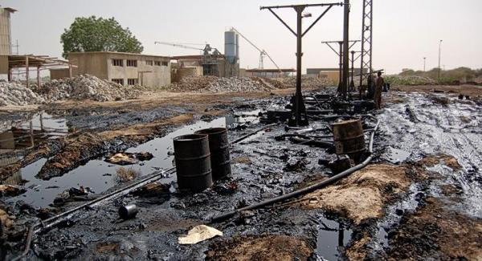
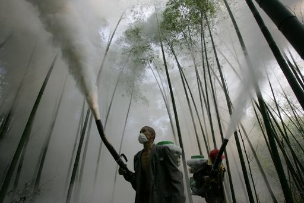
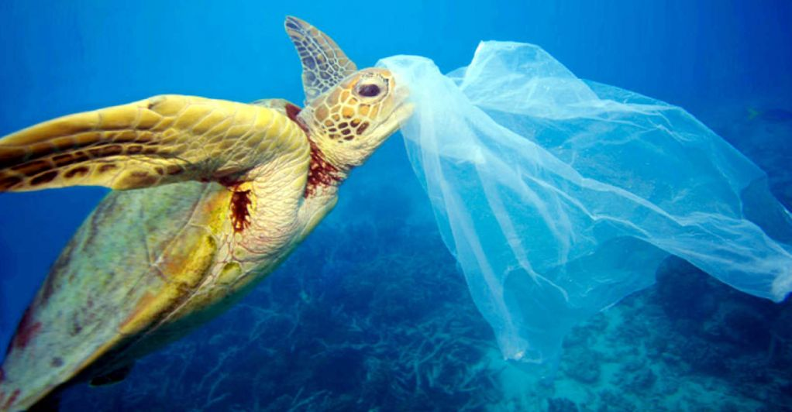
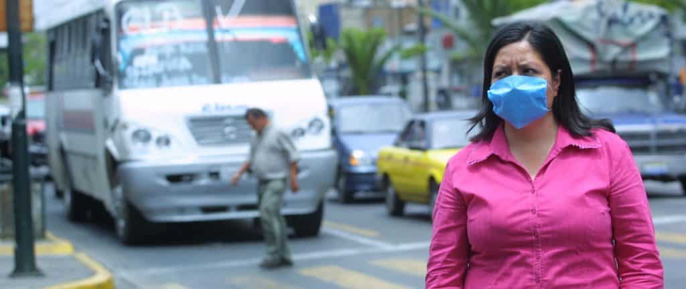
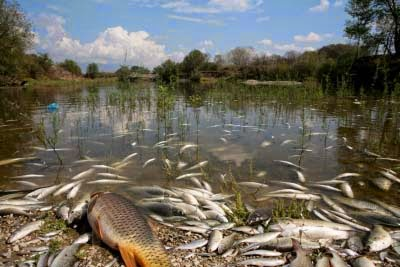
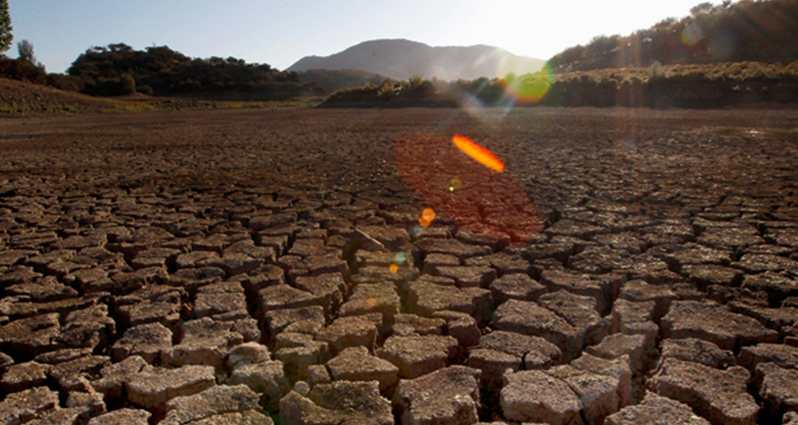
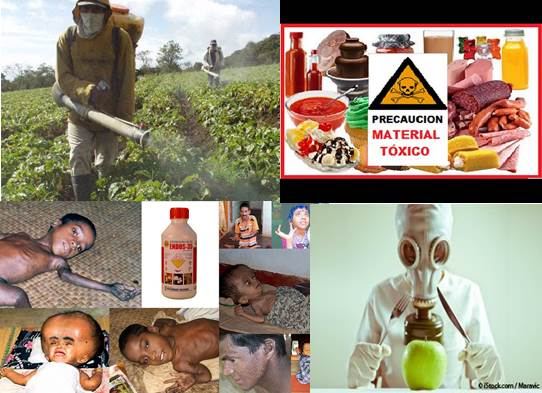
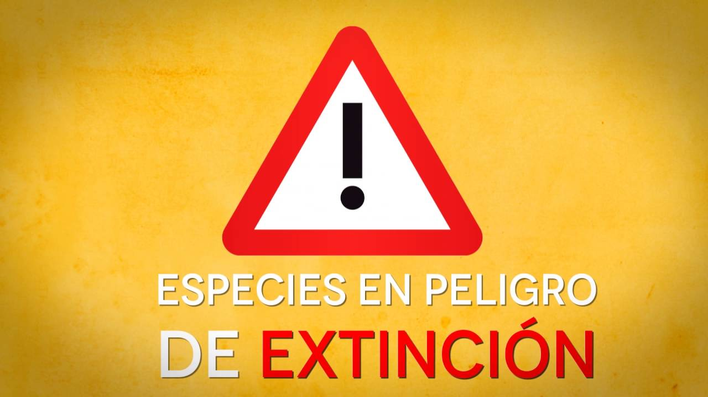

En la actualidad existe: el mal manejo del recurso forestal.

En la actualidad existe: la contaminación del aire.En la actualidad existe: la contaminación del agua.

En la actualidad existe: la contaminación del suelo.

En la actualidad existe: la contaminación con plaguicidas.

En la actualidad existe: el daño a la biodiversidad.
Las consecuenciasque se presentan.
Las consecuencias del mal manejo del recurso forestal pueden ser: escases del vital líquido.Las consecuencias del mal manejo del recurso forestal pueden ser: altas temperaturas.

Las consecuencias de la contaminación del aire puede ser: daños pulmonares.

Las consecuencias de la contaminación del agua puede ser: muertes de las especies marinas.

Las consecuencias de la contaminación del suelo puede ser: sequías en la mayor parte del mundo.

Las consecuencias de la contaminación con plaguicidas puede ser: fuerte impacto en el sistema biótico y abiótico.

Las consecuencias de la contaminación a la biodiversidad puede ser: extinción de distintas especies.